+++
title = "İlk El Tipi Şarjlı Süpürge - DustBuster"
seotitle="İlk El Tipi Şarjlı Süpürge - DustBuster"
description="El tipi şarjlı süpürgenin tasarım tarihi. İlk şarjlı süpürge Dustbuster. Dustbusterla başlayan kablosuz şarjlı süpürge günümüzde çılgınlık olarak devam ediyor."
url="sayi-11/ilk-el-tipi-sarjli-supurge-dustbuster"
aciklama="20 Temmuz 1969'da Neil Armstrong, Apollo Lunar Module Eagle'dan çıkıp ayın yüzeyine çıktı. Böyle olağanüstü bir başarıyı mümkün kılan hırslı ulusal çaba, aynı zamanda, Amerikalıların evlerine ve işyerlerine birçok yenilik soktu. Kuvarsla çalışan kol saatlerinden bina yalıtımına kadar, bugün kullandığımız birçok tüketici ürününün kökeni uzay yarışına dayanmaktadır. Yarışın içinde doğan küçük bir temizleme aracı ise büyük bir ticari başarı elde etti: Dustbuster®."
type="sayfa"
thumb="/img/dustbuster-thumbnail.jpg"
date = "2021-07-10"
sayi=["11"]
sayfa="02"
yazar=["zeynep yarar"]
tags= ["dergi"]
+++

<div class="container">
    <div class="row">
    <div class="col-md-6">   <p>
      20 Temmuz 1969&#39;da Neil Armstrong, Apollo Lunar Module Eagle&#39;dan
      çıkıp ayın yüzeyine çıktı. Böyle olağanüstü bir başarıyı mümkün kılan
      hırslı ulusal çaba, aynı zamanda, Amerikalıların evlerine ve işyerlerine
      birçok yenilik soktu. Kuvarsla çalışan kol saatlerinden bina yalıtımına
      kadar, bugün kullandığımız birçok tüketici ürününün kökeni
      <strong>uzay yarışına</strong> dayanmaktadır.
   </p>
   <p>
      Yarışın içinde doğan küçük bir temizleme aracı ise büyük bir ticari başarı
      elde etti: Dustbuster®.
   </p>
   <blockquote>
      <p>
         <strong
            >&quot;Başarılı bir tüketici ürünü, pek çok kişinin hayal ettiği
            gibi anlık bir deha parıltısının sonucu değildir.&quot;</strong
         >
         Carroll Gantz, Dustbuster&#39;ın baş tasarımcısı
      </p>
   </blockquote></div>
    <div class="col-md-6">      {{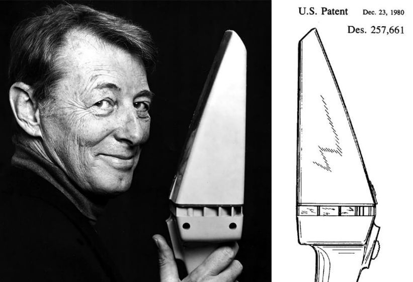}}</div>
</div>

   <h2 id="ay-tozu">Ay Tozu</h2>
   <div class="row">
    <div class="col-md-6">   <p>
      Armstrong &quot;insan için küçük, insanlık için büyük bir adım&quot;
      atmadan önce NASA, astronotların sıfır yerçekiminde kordonlora kolayca
      dolanabileceği konusunda endişeliydi. Kordonlar veya kablolar başlı başına
      bir sorundu. Karışmaları oldukça kolay ve en yakın prize olan mil
      uzaklıkları torkun sıfır olduğu yerde büyük bir problemdi.
   </p>
   <p>
      Bu sorunu çözmek için NASA, ilk el tipi elektrikli matkabı icat ettiği
      1914&#39;ten yana el aleti şirketi olan Black &amp; Decker (B&amp;D) ile
      anlaştı. Yüzeydeki karot numuneleri çıkarırken kullanılacak kablosuz ve
      şarj edilebilir matkap sözleşmesi için kolları sıvayan B&amp;D, General
      Electric tarafından yaratılan pil teknolojisini kullanmaktaydı.
      1961&#39;de dünyanın ilk şarj edilebilir matkabı da dahil olmak üzere
      akülü aletlerle deneyler yapmaya başlamıştı bile.
   </p>
   <p>
      NASA projesi için şirket, araştırma ve geliştirmesini hızlandırdı, farklı
      pil türlerini denedi. İlk olarak 1971&#39;de Apollo 15 görevi sırasında
      B&amp;D &#39;Moon Drill&#39; kullanıldı.
   </p></div>
    <div class="col-md-6">      {{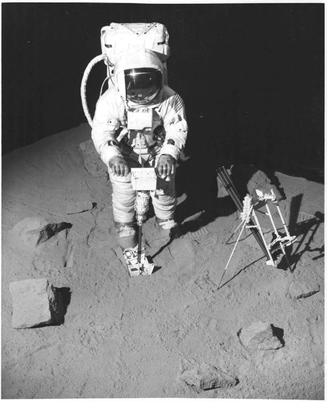}}
    <small>Black &amp; Decker kablosuz Ay Matkabı. Fotoğraf Smithsonian Ulusal Hava
      ve Uzay Müzesi&#39;nin izniyle.</small>
    </div>
</div>

<h2 id="girişim-tarzı-kablosuz">Girişim Tarzı: Kablosuz</h2>
<div class="row">
    <div class="col-md-6"> 
   <p>
      Girişimcilik tarzında, B&amp;D, arkasındaki fikirlerin bazılarını kitlesel
      pazarın tüketici ürünlerine dahil ederek Moon Drill üzerindeki
      çalışmalarını daha geniş bir yelpazeye yaydı. 1969&#39;da büyük şarj
      edilebilir pillere sahip kablosuz bir çim biçme makinesini bir yıl sonra
      kablosuz bir çalı düzeltici izledi.
   </p>
   <p>
      1974&#39;te piyasaya sürülen &#39;Mod 4 Power Handle Cordless System&#39;;
      matkap, çalı düzeltici ve küçük elektrikli süpürge olamak üzere çoklu bir
      aletti. Değiştirilebilir alet kafalarının yine değiştirilebilir pil
      takımıyla çalıştığı alet, B&amp;D&#39;nin imzası olan turuncu-beyaz
      renkteydi.
   </p>
   <p>
      Mod 4 Power Handle Cordless System oldukça yenilikçiydi ancak satışları
      hayal kırıklığına uğrattı. Bunun nedenini öğrenmek isteyen şirketin pazar
      araştırmacıları kısa sürede bir nedeni keşfettiler. Kullanımdan sonra
      aletin pillerini şarj cihazına takmayı unutan kullanıcılar için bir
      sonraki sefere alete ihtiyaç anı sorunluydu.
   </p></div>
    <div class="col-md-6">      {{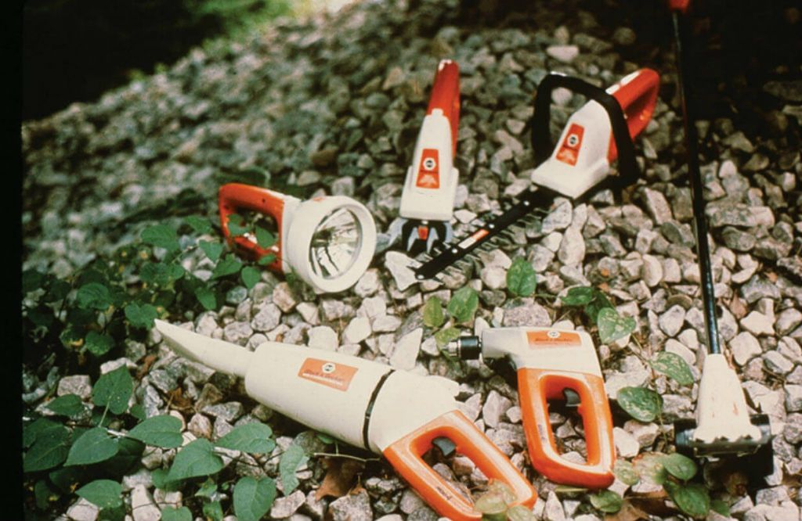}}
    <small>Mod 4 Power Handle Cordless System</small></div>
</div>

   <p>
      Belirlenen bir tespit ise; kadın kullanıcılar küçük mutfak döküntüleri
      için eşlerinin atölyelerinden Mod 4&#39;ü süpürge bileşeni ile alarak
      kullanmaktaydılar. Küçük süpürgeyi kullanmak, dolaptan teneke kutu
      süpürgeyi çıkartıp kablosunu çözmek ve geri sarmaktan çok daha kolaydı.
   </p>
   <p>Carroll Gantz&#39;a göre;</p>
   <blockquote>
      <p>
         “B&amp;D birkaç önemli ders aldı… İlk olarak, pazar araştırmasının yeni
         bir ürün icat etmeden önce yapılması gerekiyordu, sonra değil.
         İkincisi, tüketicilerin yeni teknolojiler hakkında eğitilmesi
         gerekiyordu.”
      </p>
   </blockquote>

   <div class="row">
    <div class="col-md-6"><h2 id="toz-avcısı-dustbuster">Toz Avcısı - Dustbuster</h2>
   <p>
      B&amp;D pazarlama departmanındaki Gantz, B&amp;D ürün yöneticileri,
      mühendisler ve tasarımcılardan oluşan bir ekip şirketin süpürmeye odaklı
      bağımsız bir ürünü satabileceğine inandılar.
   </p>
   <p>
      Gantz, &quot;Erkeklere yönelik neredeyse tüm B&amp;D ürünlerinin aksine,
      yeni ürünün öncelikle kadınlara yönelik olması, bodrum katında değil, evin
      üst katında kullanılması gerekiyordu&quot; diye yazdı.
   </p>
   <p>
      Black &amp; Decker bir şekilde bodrumdan mutfağa, erkek alıcılardan kadın
      alıcılara marka imajını çekerek ilk el tipi şarjlı süpürgeyi yaptı. Uzun
      süreli erkek egemen bir markadan “Dustbuster” doğdu.
   </p>
   <p>
      Dustbuster&#39;ın tasarımı o kadar yeni ve farklıydı ki Gantz,
      B&amp;D&#39;yi şirketin ilk tasarım patentini alarak onu korumaya aldı.
   </p>
   <p>
      Alınan stratejik kararlardan biri, üründeki Black &amp; Decker marka adını
      neredeyse görünmez olacak şekilde küçültmeleriydi. Yeni bir Dustbuster
      logosu geliştirildi ve ürüne dahil edildi. Ve her şeyle uyumlu bir badem
      beji için B&amp;D&#39;nin parlak turuncu renk şemasından vazgeçildi.
   </p></div>
    <div class="col-md-6">      {{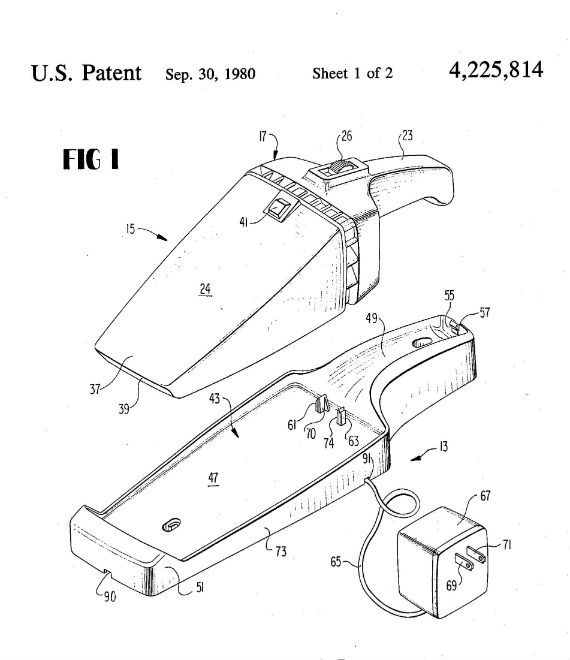}}</div>
</div>
<div class="row">
    <div class="col-md-6">      {{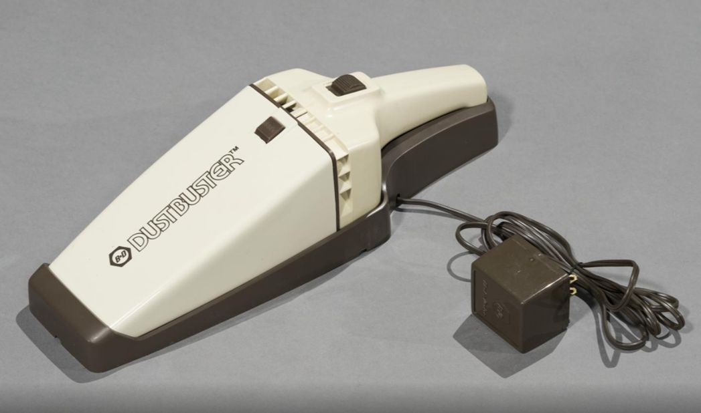}}</div>
    <div class="col-md-6">      {{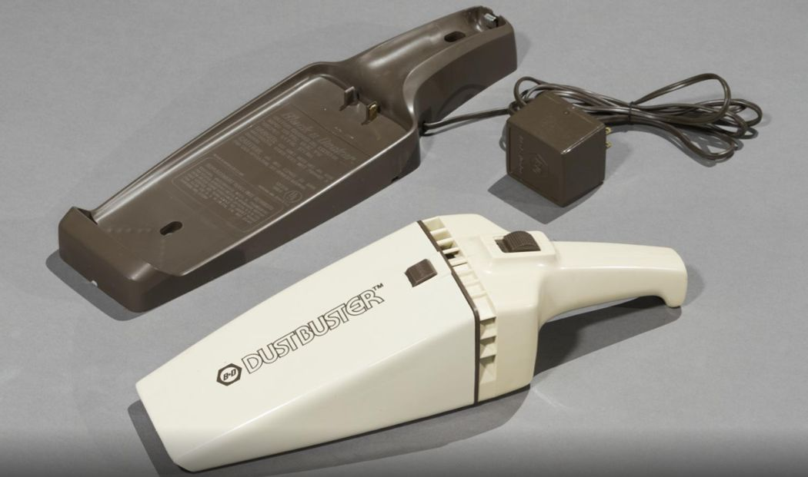}}</div>
</div>
<div class="row">
    <div class="col-md-6">   <p>
      Ürün adı böyle bir üründen istenen agresif gücü arz ettiriyordu. “Güç”
      algısı o kadar önemliydi ki, mühendisler sesli bir güç hissi için fan
      sistemini olması gerekenden daha gürültülü olacak şekilde kasıtlı olarak
      değiştirdi.
   </p>
   <p>
      Temmuz 1978&#39;e kadar devam eden prototip çalışmalar ve modeller mekanik
      testler için kullanıldı. Yaklaşık 14 1/2 inç uzunluğundaki prototipler 1,5
      kilo ağırlığındaydı.
   </p>
   <p><em>(son paragraf şahsenemin yazısına ithafen ek bilgi)</em></p>
   <h2 id="yeni-pazar">Yeni Pazar</h2>
   <p>
      Dustbuster, tüketicilerin pislikleri ve dökülmeleri hızlı bir şekilde
      temizleme ihtiyaçlarını karşılayan yepyeni kablosuz el tipi elektrikli
      süpürgesi ile yeni bir toplu pazar kategorisi yarattı. Ayrıca yeni
      kategori için görsel form biçimini belirleyen B&amp;D&#39;nin şirkette ev
      ürünleri bölümünün oluşmasına öncülük etti.
   </p>
   <p>
      İlk yılında, geleneksel el tipi elektrikli süpürge pazarının dört katı
      olan bir milyondan fazla Dustbusters satıldı. Bazı tahminlere göre ise,
      ürünün 1979&#39;da piyasaya sürülmesinden bu yana geçen 40 yılda -yeniden
      tasarlanmış ve geliştirilmiş olmak üzere- 150 milyondan fazla Dustbusters
      satılmıştır.
   </p></div>
    <div class="col-md-6">      {{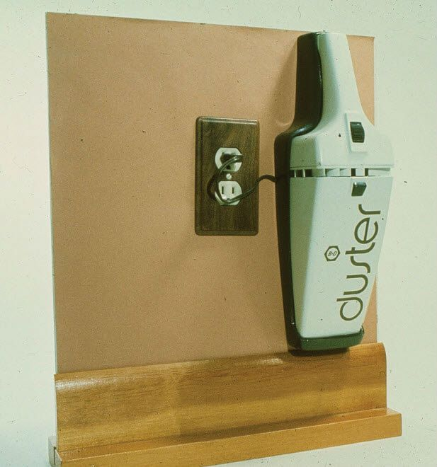}}
    <small>      Tasarımcıların, aletin prize takılı bir şarj tabanına nasıl
      yerleştirilmesi gerektiğini göstermek için prizli duvar modeliyle beraber
      yaptıkları prototip</small></div>
</div>
<div class="row">
    <div class="col-md-4">      {{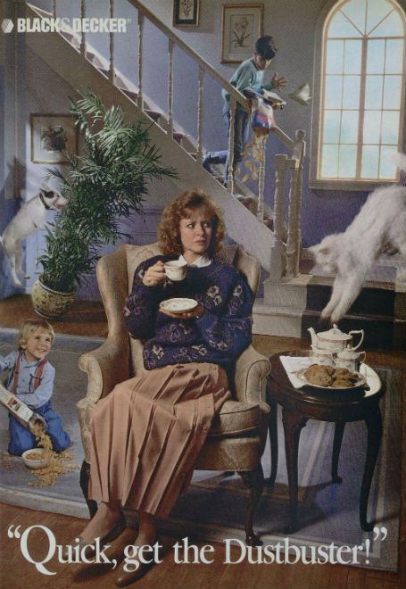}}</div>
    <div class="col-md-4">      {{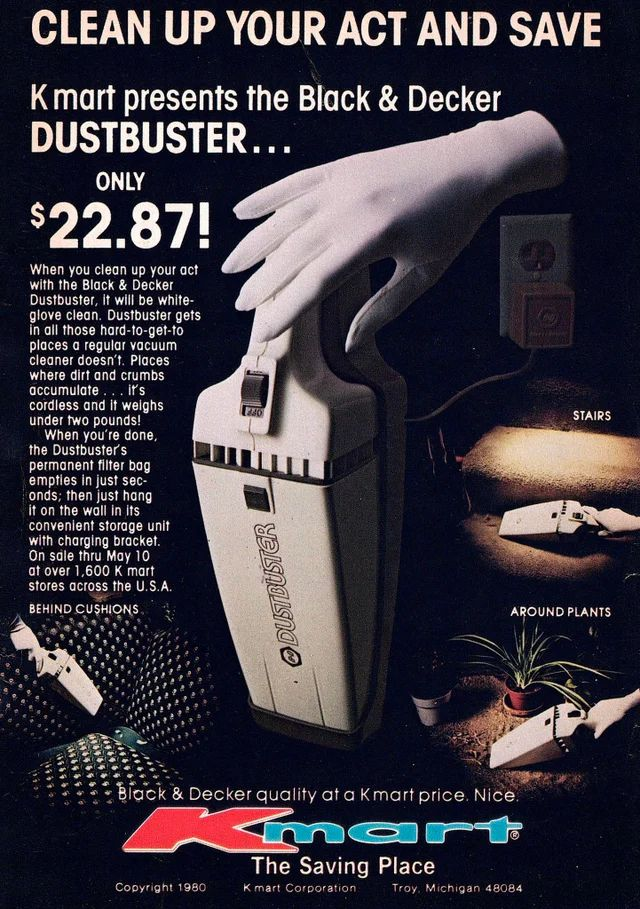}}</div>
    <div class="col-md-4 mt-md-2"><div class="embed-responsive embed-responsive-4by3">
        <iframe class="embed-responsive-item" src="https://www.youtube.com/embed/LHBzEfQEc4I"></iframe>
    </div></div>
</div>

<div class="p-md-3 bg-grey"><p>✔ Dustbuster, popüler kültürün bir simgesi haline geldi.</p>
   </div>
   <br>
<div class="p-md-3 bg-grey">   <p>✔
      İlk Apollo görevlerindeki kökenlerinden Mod 4&#39;ün ticari başarısızlığı,
      benzersiz patentli tasarımı ve popüler bir ev aleti olarak nihai zaferi...
   </p></div>
   <br>
<div class="p-md-3 bg-grey">   <p>✔
      Dustbuster; inovasyonun kat edebileceği yolculuğun büyüleyici bir örneğini
      sunar ki bu yolculuk, ayı matkapla delmekle başlamıştır.
   </p></div>

<h2 id="zamanın-tozu">Zamanın Tozu</h2>
<div class="row">
    <div class="col-md-4">   
   <p>Ve işte &#39;&#39;Back The Future&#39;&#39;dan bir kesit;</p>
   <p>
      Marty sadece Grays Sports Almanac&#39;ı istiyor, ancak &#39;Blast from
      the Past&#39;i işleten kadın, ona ek ürünler satmaya çalışıyor.
   </p>
   <p>
      &quot;...ve tozla ilgileniyorsanız, 1980&#39;lerden kalma ilginç bir
      parçamız var - buna &#39;DustBuster&#39; deniyor.&quot;
   </p></div>
    <div class="col-md-4"> {{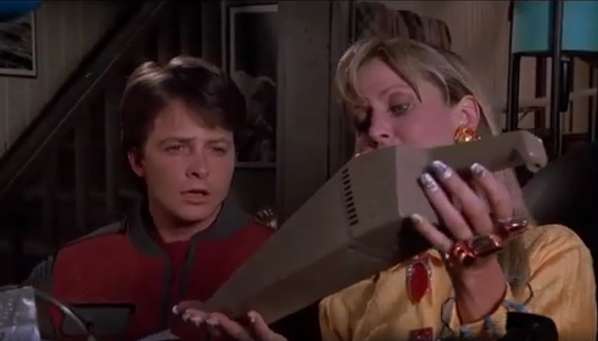}}
    <small>      &#39;Blast from the Past&#39; pazarlamacısı, Marty&#39;ye 2015&#39;de
      DustBuster&#39;ı gösteriyor.</small></div>
    <div class="col-md-4"><video controls class="mt-md-2" width="100%">
        <source src="https://www.markut.net/sayi-11/ilk-el-tipi-sarjli-supurge-dustbuster/dustbuster-back-the-future-film-sahnesi.mp4" >
     </video>
<small> &quot;...and if you&#39;re interested in dust, we have a quaint little
    piece from the 1980s – it&#39;s called a DustBuster.&quot;</small>
    </div>
</div>


   <div class="row">
    <div class="col-md-4"><p>
      Filmin bu kesitinde; pazarlamacının açıklaması, 2015 yılına kadar tüm tozu
      ortadan kaldırmanın bir yolunun bulunamadığı anlamına gelirken
      DustBusters&#39;ın ise 2015 yılında çoktan neslinin tükendiğini işaret
      ediyor.
   </p>
   <p>
      Ancak tükenmedi. Tasarım değişmiş olsa da, Black &amp; Decker hala birkaç
      farklı Dustbuster el tipi elektrikli süpürge modeli üretiyor.
   </p></div>
    <div class="col-md-4">{{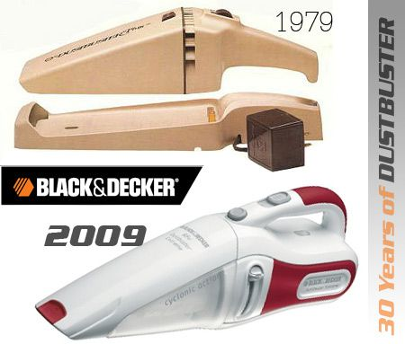}}</div>
    <div class="col-md-4">      {{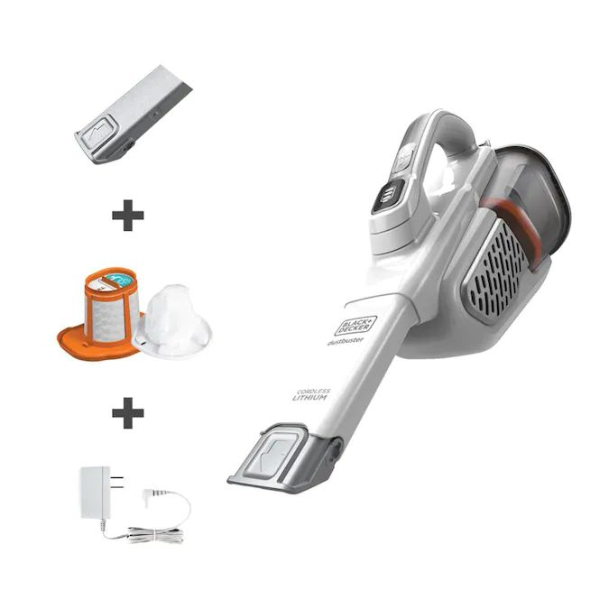}}
<small>2020 Dustbuster</small></div>
</div>


<h2 id="tüketim-çılgınlığında-son-toz">Tüketim Çılgınlığında Son Toz</h2>
<div class="row">
    <div class="col-md-4"><p>
      Dustbuster&#39;la başlayan kablosuz ve şarjlı süpürge çağı günümüzde bir
      çılgınlık olarak devam ediyor.
   </p>
   <p>
      Markaların şarjlı süpürge yarışına şahit olduğumuz bu dönemde sahaya
      &#39;robot süpürgeler&#39; de çıkmaya başladı. “Katya” veya “Sebastian”
      gibi mizahi göndermeli isimlerle evlerde salınıyorlar.
   </p>
   <p>
      Dustbuster gibi şarjlı ve kablosuz olan robot süpürgenin el tipi olmasına
      gerek dahi yok!
   </p></div>
    <div class="col-md-4">  {{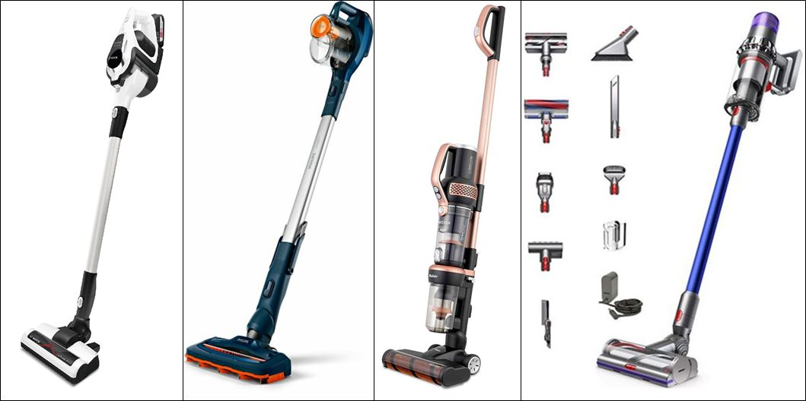}}</div>
    <div class="col-md-4">      {{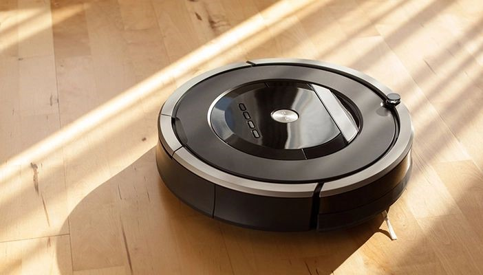}}</div>
</div>

<button
class="btn markutbtn"
data-target="#my-collapse"
data-toggle="collapse"
aria-expanded="false"
aria-controls="my-collapse"
>
Kaynaklar
</button>
<div id="my-collapse" class="collapse">
<pre> <small><code>  
    Gantz, Carroll. The Vacuum cleaner: a history. Jefferson, North Carolina: McFarland and Company, 2012.

    https://www.uspto.gov/learning-and-resources/journeys-innovation/historical-stories/moondust-and-marketing-magic
    
    https://www.idsa.org/images/pdfs/case_studies_2009_blackdecker.pdf
    
    http://www.industrialdesignhistory.com/node/149
    
    https://backtothefuture.fandom.com/wiki/DustBuster
    
    https://www.thehenryford.org/collections-and-research/digital-collections/artifact/488124/#slide=gs-490924
    
    https://backtothepredictions.com/extinct-dustbuster/
    
    https://toolmonger.com/2009/05/21/the-dustbuster-turns-30/
    
    https://blog.quicksigorta.com/teknoloji/ihtiyac-mi-luks-mu-robot-supurge-cilginligi-1848
</code></small></pre>
</div>
</div>

